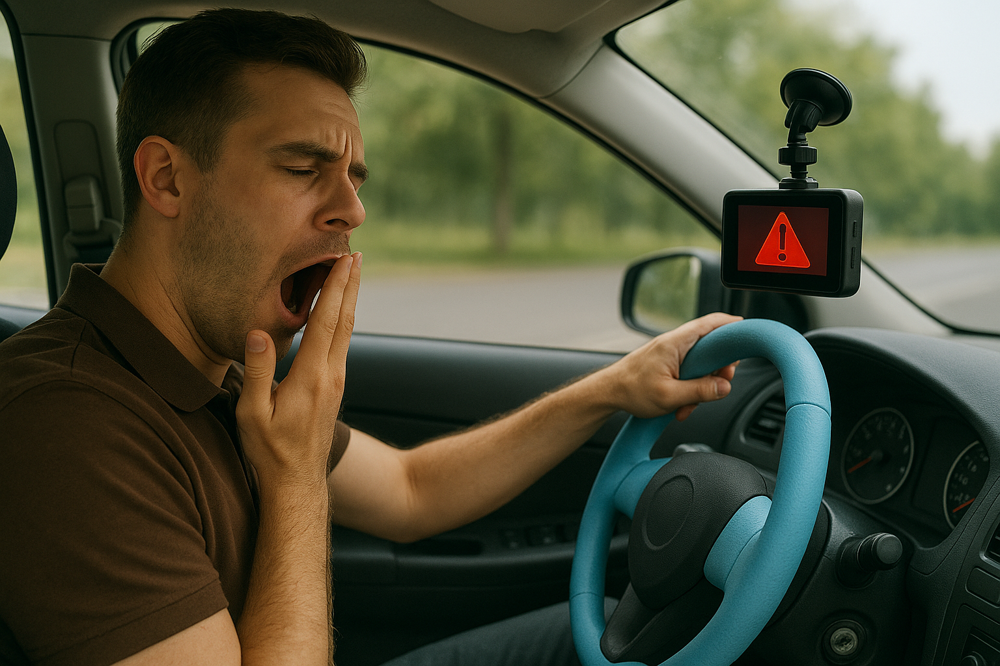

El desarrollo de este prototipo funcionó como una Prueba de Concepto sólida que permitió
comprobar la viabilidad técnica de fusionar visión computarizada y sensores biométricos
para la detección temprana de somnolencia. El sistema actual logra capturar, transmitir y
procesar información en tiempo real, además de emitir alertas sonoras desde el volante
mediante el buzzer integrado.
Sin embargo, al proyectar su evolución hacia un Producto Mínimo Viable, surgieron varias
áreas clave de mejora. Una de ellas es la integración del hardware y del sistema embebido.
Actualmente el prototipo depende de múltiples dispositivos, lo cual no es ideal para un
producto final. La meta es concentrar todo dentro de la misma dashcam, utilizando un sistema
más robusto como una Raspberry Pi o una placa personalizada. Con esto, el algoritmo de
detección podría ejecutarse directamente en el dispositivo, eliminando el módulo ESP32-CAM
adicional y la necesidad de una computadora externa, reduciendo así la latencia y logrando
un diseño más compacto y limpio.
Otra área importante es la robustez de los sensores y el desempeño en condiciones nocturnas.
Para operar correctamente en escenarios de baja iluminación —donde la somnolencia es más crítica—
se requerirá integrar una cámara infrarroja capaz de detectar parpadeos y expresiones sin
depender de la luz ambiental. Asimismo, será necesario sustituir los sensores de pulso actuales
por modelos de mayor fidelidad, capaces de ofrecer mediciones estables incluso con el movimiento
natural de las manos durante la conducción.
Finalmente, también se identificó la importancia de mejorar la ergonomía y el diseño físico
del sistema. La carcasa del volante debe evolucionar hacia materiales automotrices como piel
sintética o textiles técnicos, con el fin de mejorar la comodidad, la durabilidad y la
sujeción. Esto no solo elevará la experiencia del usuario, sino que también permitirá obtener
lecturas biométricas más consistentes.
En conjunto, estos avances representan los pasos necesarios para transformar esta prueba
académica en un producto realista, confiable y listo para implementarse en escenarios cotidianos.
